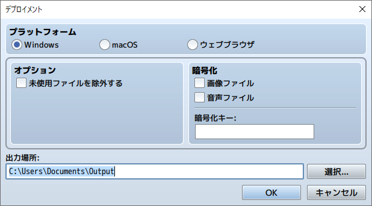

RPG TKOOL MZ HELP
資料集

出力フォーマット
デプロイメント

各プラットフォーム用の配布パッケージを出力します。Windows、macOS、ウェブブラウザへの出力が可能です。
-
Windowsの場合
- 出力されたゲームフォルダを配布します。
-
macOSの場合
- 出力されたゲームフォルダ、もしくはゲームフォルダ内のファイルGame.appを配布します。
※Windows環境ではGame.appはフォルダとして表示されますが、macOS環境ではアプリケーションとして起動することができます。 - 出力されたゲームフォルダ、もしくはゲームフォルダ内のファイルGame.appを配布します。
ウェブブラウザの場合
出力されたゲームフォルダをWebサーバーにアップロードするとブラウザ上でプレイすることができます。
ゲームプレイの動作環境
| 動作環境 | HTML5 CanvasとWeb Audio APIに対応したもの iOS12以上 Android8.0 以上 |
|---|---|
| 推奨ブラウザ | Google Chrome, Safari, Firefox, iOS Safari, Chrome for Android |
|
※スマートフォンのブラウザでプレイする場合は、Wi-Fi環境でプレイしてください。 ※WebGL対応ブラウザでのプレイ専用です。 |
|
オプション ［未使用ファイルを除外する］
オプション［未使用ファイルを除外する］にチェックを入れてデプロイメントをすると、ゲームで未使用のファイルを含めずに、ゲームフォルダを書き出します。これによりファイルサイズを軽量化することができます。
除外対象になるファイルは以下のフォルダ内のファイルです。
- プロジェクトフォルダ/img/以下
- プロジェクトフォルダ/audio/以下
- プロジェクトフォルダ/effects/以下
なお、プラグインの設計によっては、プラグインで指定したファイルが除外対象になる場合があります。
公式プラグイン「MaterialBase」を設定することで、除外対象外にすることができます。
暗号化
ゲームで使用している画像ファイルもしくは音声ファイルを暗号化します。
-
画像ファイル
チェックを入れるとパッケージに含まれる画像ファイルを暗号化します。
-
音声ファイル
チェックを入れるとパッケージに含まれる音声ファイルを暗号化します。
-
暗号化キー
任意の文字列を入力してください。ファイルを暗号化する際に内部で使用されます。
※暗号化したファイルはプロジェクトフォルダ内では使用できません。
※ブラウザプレイの都合上、不正な複合を完全に防ぐことはできません。